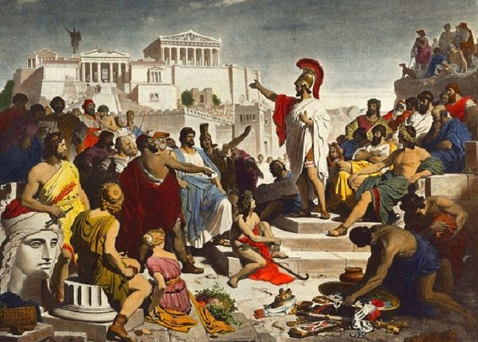
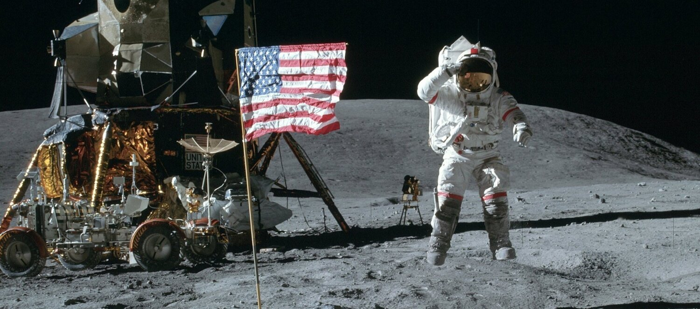

Ancient History
6000 BCE - 650 CEAncient history is the time period in history between the origins of human civilization and the fall of ancient empires.

The Renaissance
14th century - 17th centuryThe Renaissance was the time period in history that saw increased European explorations, the invention of the printing press, and the development of international trade.

Age of Revolution
1750 CE - 1945The Age of Revolution, also referred to as the Late Modern Period, encompasses a transformative era in human history spanning roughly from the late 18th to the early 20th century.

Modern Era
1945 - presentModern Era, also known as the Contemporary Period or Present Era, encompasses the period from the late 20th century to the present day, representing a dynamic and rapidly evolving phase of human history.